Mysterium keyboard
A keyboard I built from a set of PCB design files and a parts list, learning each step as I got to it.
- Started with
- PCB design files and a parts list
- Learned
- KiCad and soldering
- Year
- 2022

The files
The project came as PCB design files and a parts list. I taught myself KiCad to add my logo to the bottom plate.
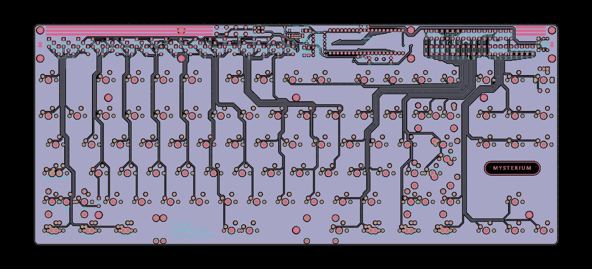
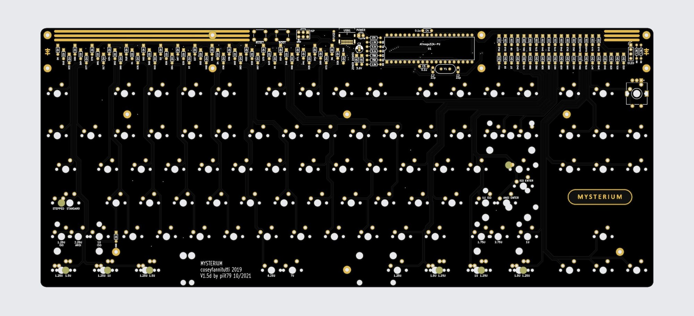
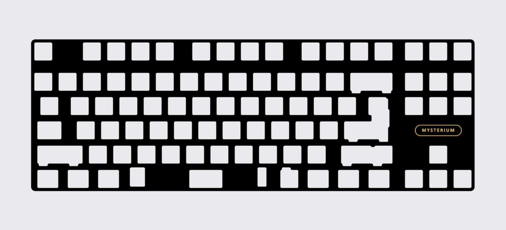
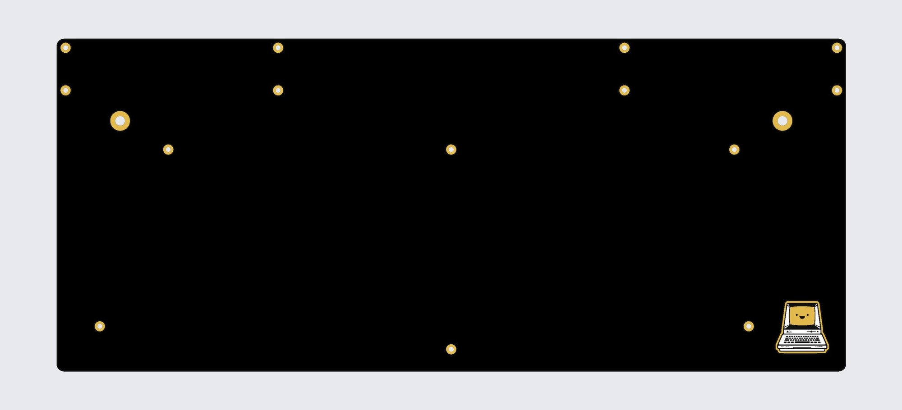
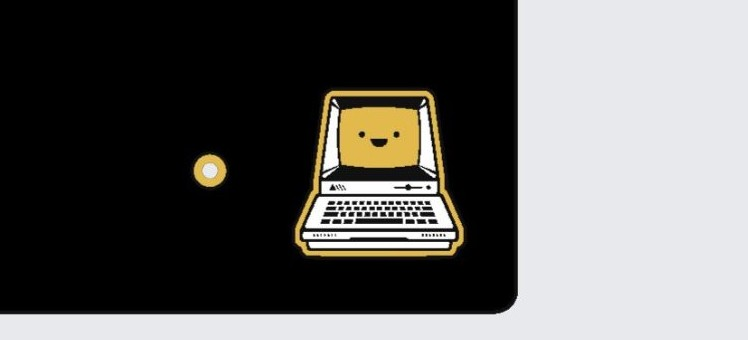
Boards and parts
I ordered the boards from a manufacturer in China and sourced every component myself.
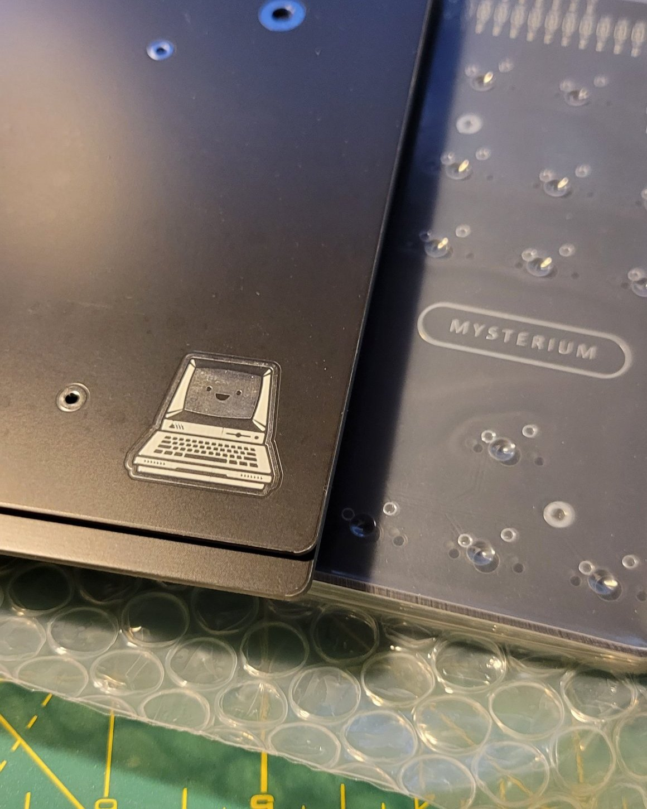
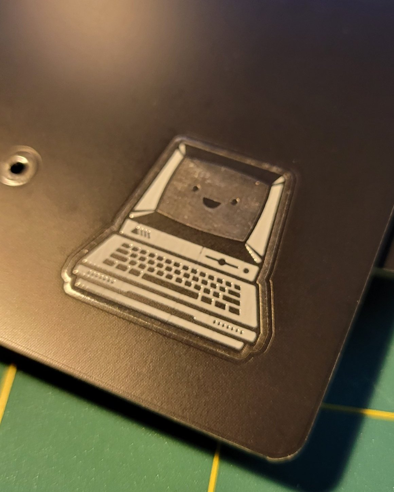
Soldering
Then I learned to solder. There was a lot of soldering.
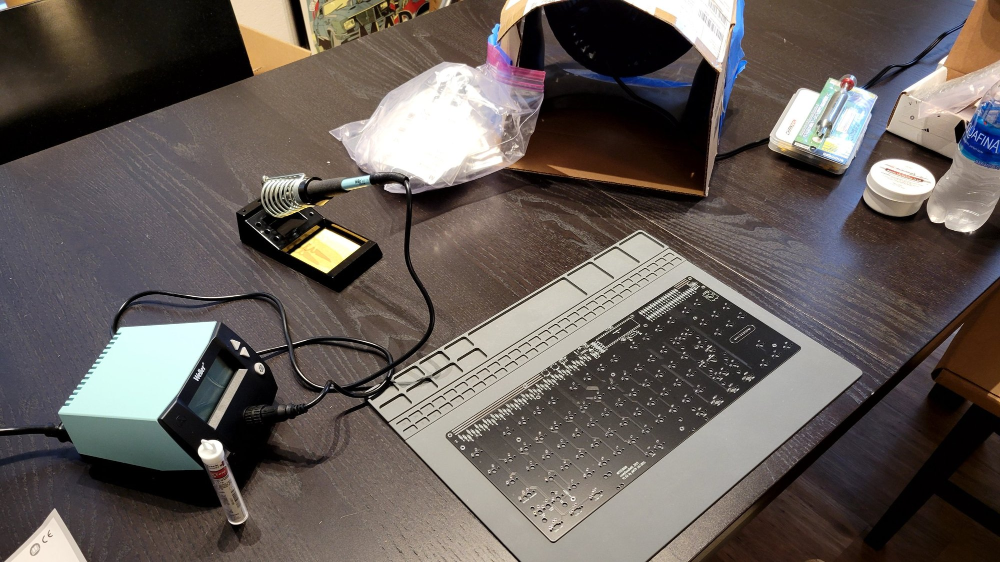
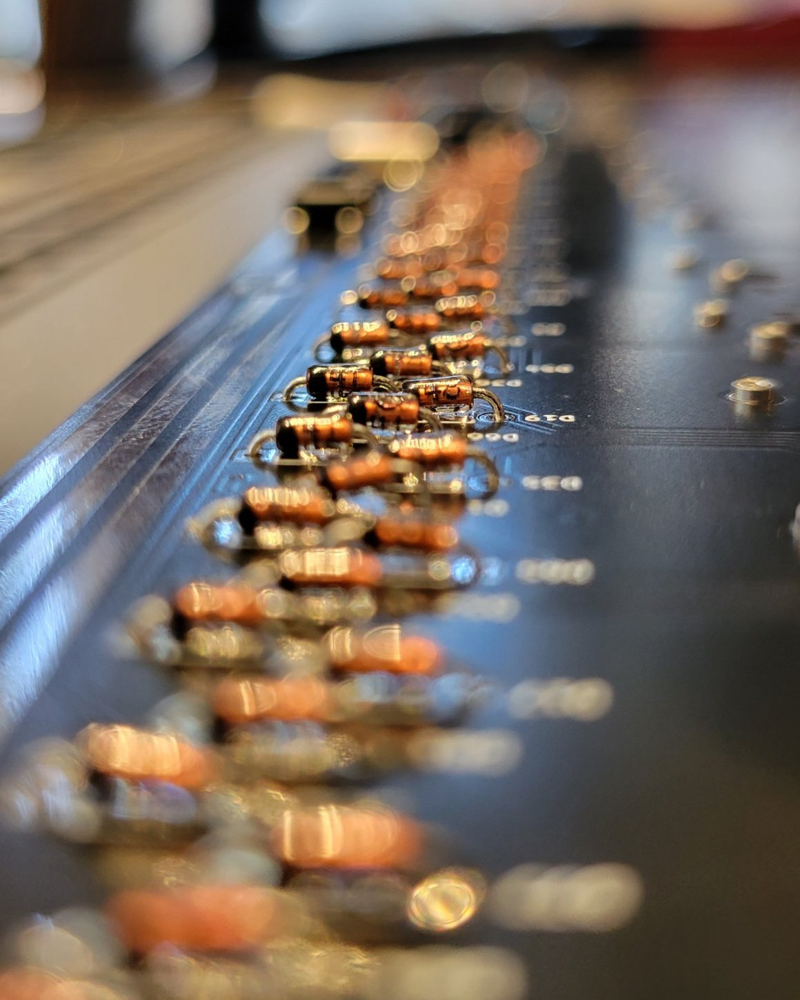
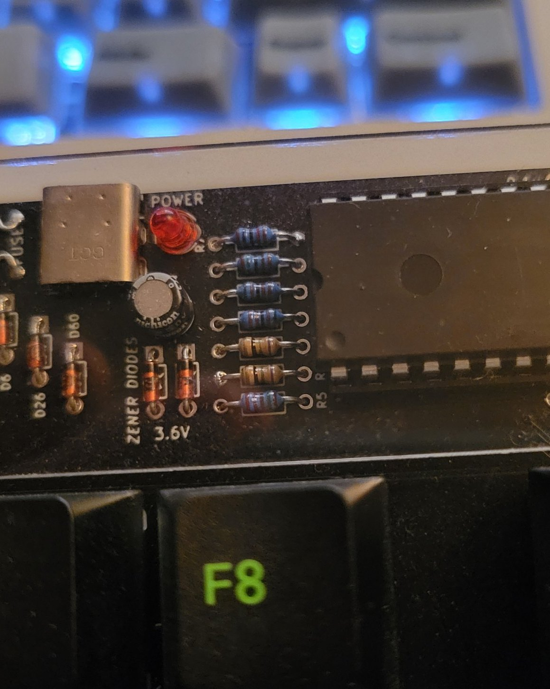
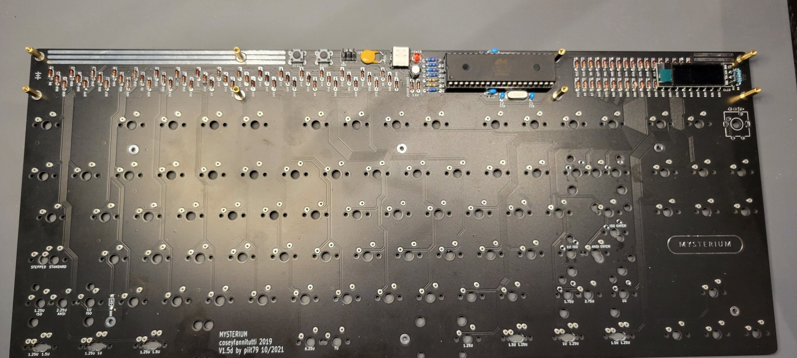
First power-on
Flashing the controller and testing the screen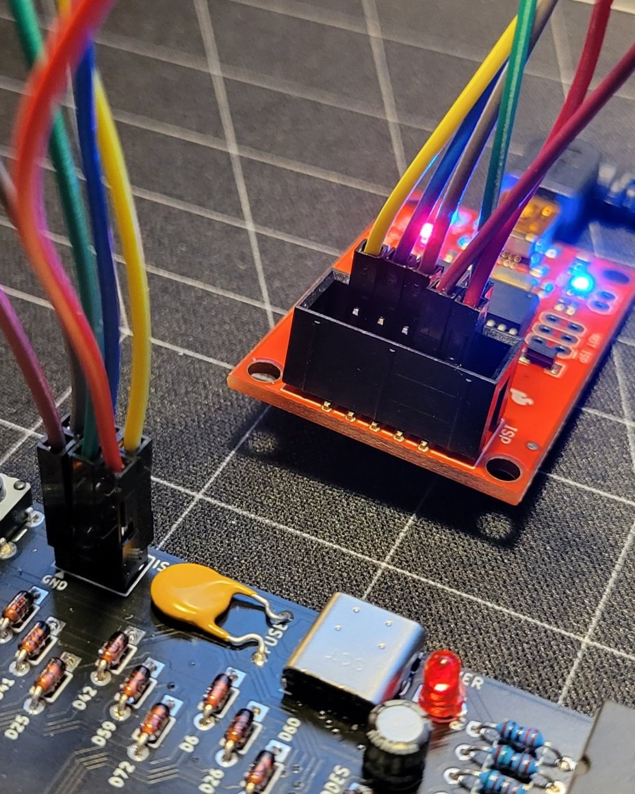
Switches
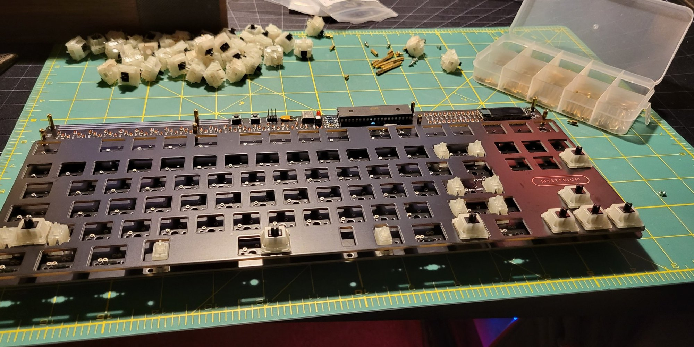
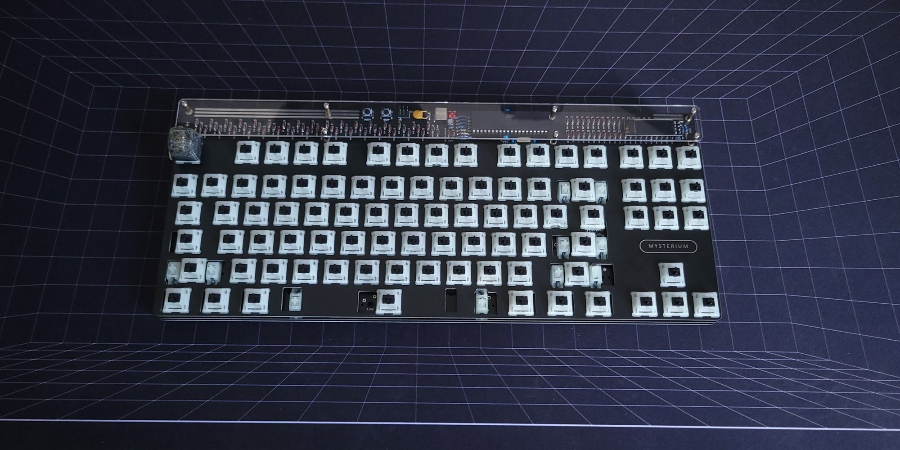